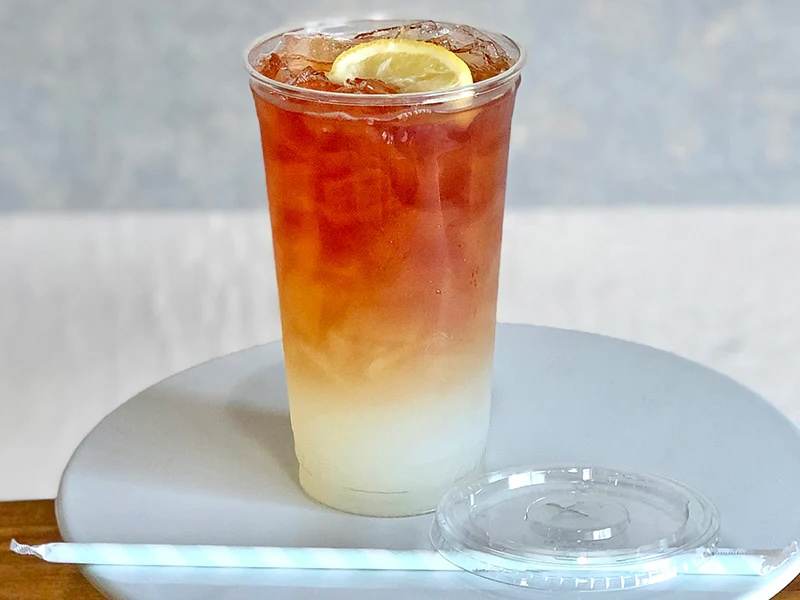

One For The Mind, One For The Body, One For The Soul
About
The "three drink theory" is just classy hydration with a side of chaos: one for the mind (coffee, because brain cells need caffeine), one for the body (water, to undo the damage of being alive), and one for the soul (wine, because, honestly, you’ve earned it). It’s less about balance and more about keeping it together—barely.
Mind ðŸ§
Red Bull gives your mind the energy it craves to conquer the day.
Body 💪

Refresh and hydrate your body with pure, life-sustaining water.
Soul 🧘
Relax your soul with a blend of tea and lemonade for balance.